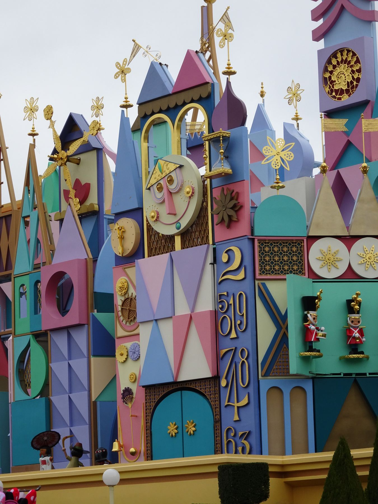
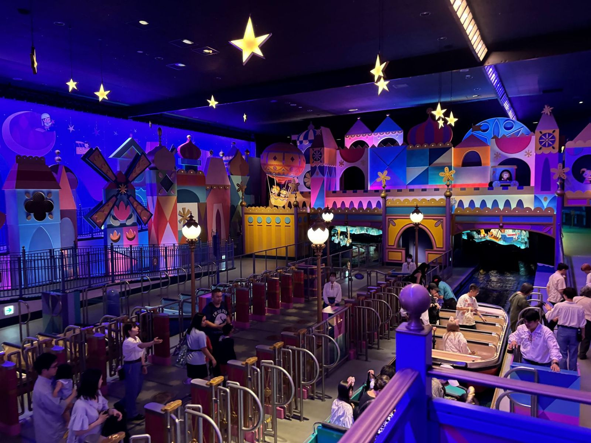
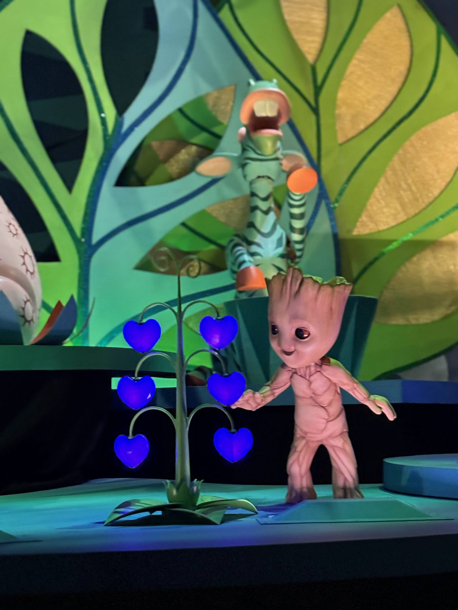
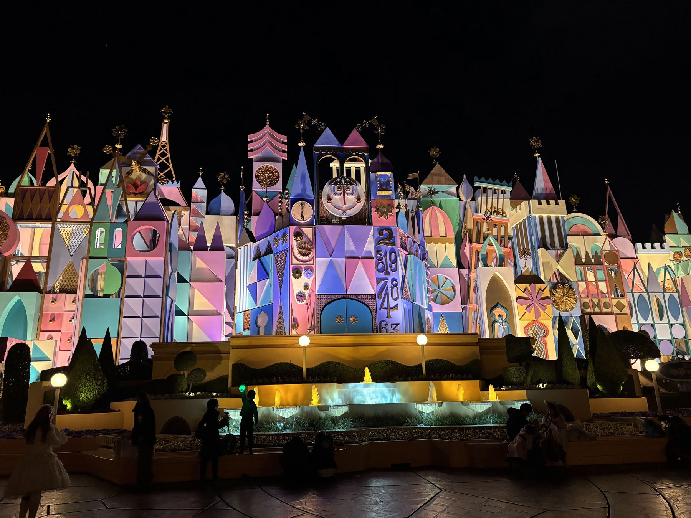

世界を繋ぐ平和の賛歌とイマジニアたちの純粋なる情熱
みなさんは「イッツ・ア・スモールワールド」を訪れたとき、どんなことを感じますか？ 一見すると子供向けの親しみやすいライドアトラクションですが、穏やかな水流と愛らしい歌声の根底には、ディズニーが紡ぐ強い平和へのメッセージと、人間への深い賛歌が静かに息づいています。
アトラクションに登場する何百体もの子供の人形たち。よく観察してみると、実はすべて同じ一つの顔の造形で作られていることに気づいたことはありますか？ これは彫刻家ブレイン・ギブソンによる意図的なデザインです。「人種、国籍、生まれた国がどこであっても、子供たちはみな同じ人間であり、等しく尊い存在である」という平等の象徴として、あえて個々の顔の個性を排することで、隔たりのない普遍的な一体感を宿しています。
この世界には、ディズニーキャラクターを除いて「大人の人間」が一切登場しません。登場するのは子供たちと動物たちだけ。偏見や憎しみのない「純粋無垢な視点」で世界を見つめ直してほしいという、イマジニアたちからの静かな語りかけです。未来の平和を築いていく主役は、いつだって純真な子供たちであることを伝えてくれています。

ボートで世界中を旅していると、ヨーロッパ、アジア、アフリカなど、どの部屋にも必ずその地域ごとの「太陽」が象徴的に描かれています。「どこにいても、同じ一つの太陽の下でみんな一緒に生きている（＝世界は一つ）」という事実を、旅の始まりから終わりまで、温かい光で優しく照らし続けているのです。
アトラクション内を包み込む不朽の名曲。この音楽が誕生するまでの歩みには、時代に抗う強い情熱と、劇的なメロディの転換劇が刻まれていました。
この小さな世界の誕生は、1964年に開催された「ニューヨーク世界博覧会」にまで遡ります。ユニセフ（国連児童基金）パビリオンの目玉展示として、ペプシコ社の出資のもと、ウォルト・ディズニー自らが制作を手掛けたのが始まりです。世界の平和を祈念する壮大な歴史の記念碑として、パビリオン全体が設計されました。
この曲を手掛けたのは、映画『メリー・ポピンズ』でもおなじみの、ロバート・B・シャーマンとリチャード・M・シャーマンの兄弟です。ウォルトから「世界を一つにするシンプルな歌を作ってくれ」という使命を受け、制作に臨みました。
当初、シャーマン兄弟が書き上げたメロディは、テンポが非常に遅く、伴奏もない、賛歌（バラード）のような厳かなものでした。「キューバ危機」などによる冷戦の極度の緊張状態にあった当時の世界情勢を反映し、厳粛な「平和への祈り」を表現しようとしていたためです。
このウォルトの一言により、曲は劇的にテンポアップ。現代の誰もが知る、異なる旋律が美しく重なり合って一つの曲へと溶け合う「輪唱（カウンタフォニー：対位法）」のスタイルへと生まれ変わったのです。

このシンプルで親しみやすい合唱曲は、ラジオ、テレビ、パーク内を含め「地球上で最も多く演奏（再生）された楽曲」として米TIME誌などでも紹介されるほどの功績を残しました。
この世界観を構築するため、ウォルトの元に集ったイマジニアたち。各ポートレートをタップすることで、それぞれの分野で発揮した細やかなこだわりと確かな足跡を覗くことができます。
小さな世界が紡ぐ平和のメッセージは、地球という国境を越えるだけでなく、ときには銀河の彼方をも結びつけてしまうようです。東京ディズニーランドの運河にて開催されている『イッツ・ア・スモールワールド with グルート』も、そんな素敵な出会いの一つです。
映画『ガーディアンズ・オブ・ギャラクシー』シリーズに登場する、愛らしくも勇敢な樹木型宇宙人「グルート」。彼は銀河の仲間たちと共に地球へバカンスにやってきました。世界中の子供たちの歌声や、異国情緒あふれる伝統文化に触れながら各地を巡る、幸せな船旅の記録です。

この特別なプログラムでは、グルートの相棒であるロケット、マンティス、ガモーラ、ハルク、そしてドクター・ストレンジ、ブラックパンサーといったマーベル・スタジオのヒーローたちが、メアリー・ブレア独自の愛らしいデフォルメ・ドールとなって、世界の子供たちに囲まれながら共に歌を口ずさんでいます。
アフリカの星空の下でキリンと並び、淡く輝く青いハートの熱帯植物に見惚れているグルートや、南極でキャプテン・アメリカの盾に乗って楽しそうにそり遊びをする姿が確認できます。アトラクション本来の「私たちは一つ」というテーマと、異なる星々を越えて響き合う「宇宙的な友情」が美しく融け合い、今日もこの世界を優しく繋いでいます。
世界中のディズニーパークへと広がっていったこの平和の航路。各地のパークを訪れてみると、気候や建築の美学に基づいて少しずつ異なる表情を見せてくれます。その背景には、イマジニアたちの細やかなデザインへのこだわりが詰め込まれています。
アトラクションの外観（ファサード）は、メアリー・ブレアとローリー・クランプによる、ミッドセンチュリー・モダンの代表作とも言えるデザインです。エッフェル塔、ピサの斜塔、タージ・マハルといった世界的なランドマークが平面的な幾何学模様（三角形や四角形など）に抽象化され、一つの巨大な「調和されたモザイクの街並み」として組み立てられています。さらに、15分ごとに中央の「からくり時計」が作動すると、時計の顔が左右にスライドし、おもちゃの兵隊たちと世界の子供たちの人形が音楽に合わせてパレードを行います。「世界のどの国にも、時の流れは等しく訪れる」という調和を示す、極めて象徴的な構造物です。

旅の最後に訪れる、一面が純白の「ホワイト・ルーム」。各テーマの部屋では緑や青、暖色といった地域固有の色彩が主役を務めていましたが、最終部屋ではそれらがすべて「白と金」の2色へと統合されます。光学的には、あらゆる色の光を重ね合わせると白い光になるように、多種多様な文化や国籍が手を取り合い、すべてが一つに融け合う調和の状態を、純白の光の中で表現しているのです。
アナハイムのパステル調のファサードから、フロリダ版の「純白と金」による屋内ファサードまで、各地の気候に合わせながらも一貫して同じメッセージが世界中のパークで受け継がれています。
最終編集日：